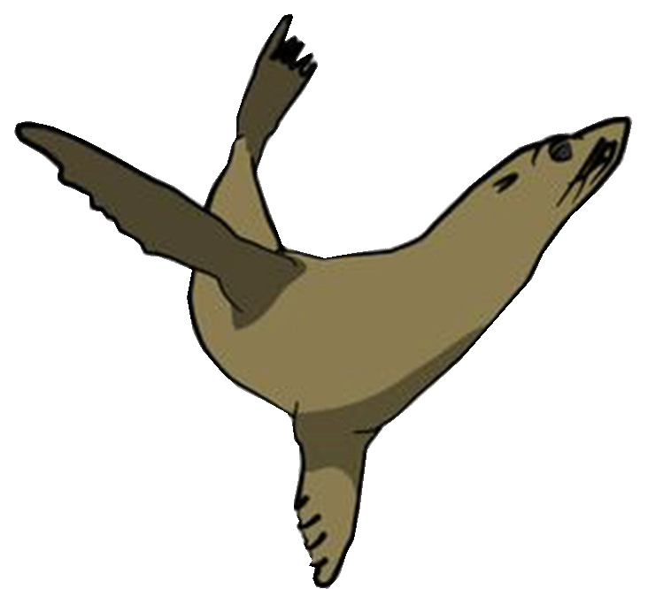

California Sea Lion
Hover over a body part to learn more about the anatomy of a California Sea Lion!
Home

Male California Sea Lions have a bony bump on top of their heads, known as a sagittal crest which allows them to have tremendous bite force.
Can you think of why male sea lions might need a strong bite?
Within the flipper are bones similar to the bones in our hands. When different species share the same feature from a common ancestor, it’s called a homologous structure!
California Sea Lions use their tails for thermoregulation. By peeking their tails or flippers out of the water while remaining submerged, they can either use the sun to warm up their body or use the wind to cool off.
image source: https://www.etsy.com/listing/490601155/california-sea-lion-clip-art-digital